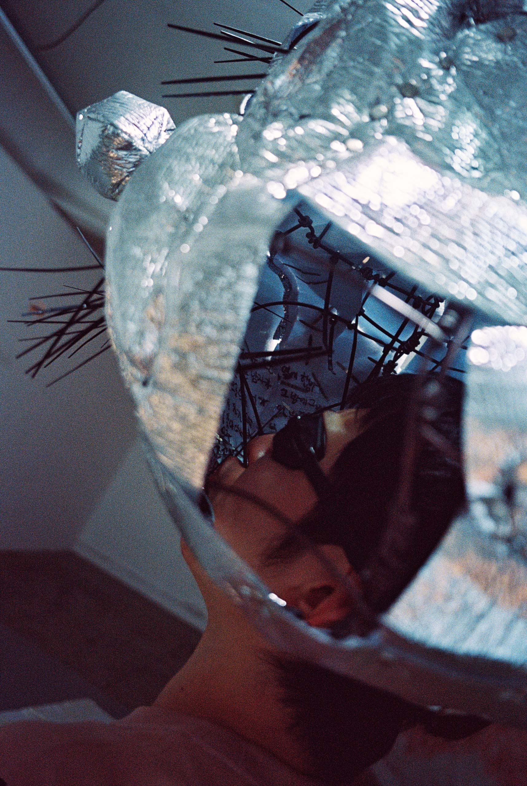

컨닝 고해
<
위력적이었다. 공연을 다 본 후 다음 날까지 흥분이 모두 가시지 않았던 것으로 기억할 만큼 몰입력이 있는 공연이었다. 이 몰입은 당신의 이야기에 내 경험을 들어맞추는 식의 이입이나 공감을 의미하지 않는다. 이야기가 하나의 풍선이라면, 퍼포머가 공연 내내 하는 일은 그 풍선에 바람을 불어넣기인데 그 풍선이 터질 기미를 보이지 않고 공연장을 가득 메우기 직전까지 부푸는 것이다. 시한폭탄을 가지고 저글링하는 어린애가 집권하는 밀실의 가장자리에서 <컨닝고해>의 관객들은 숨죽인 채 시간을 보냈다.
공연장. 마름모꼴로 탁 트인 공연장에는 7여 개의 오브제가 늘여놓아져 있다. 퍼포머는 그 오브제들을 하나하나 순서대로 가동시키며 7개의 독립된 챕터로 이루어진 공연을 만들어간다. 이 중 내가 가장 다시 보고 싶은 장면은 여섯 번째 챕터인 ‘우주 비행사의 미소’.


사진: 박정우
침대 메트리스 위에 쭈그려 앉은 퍼포머가 자기 체구의 세 배 정도는 되어 보이는 길죽한 검정색 풍선에 펌프질을 하고 있다. 검정색 풍선은 로켓 혹은 남성기를 연상시키는 십자가의 형태. 퍼포머는 커다란 우산 혹은 뒤집어쓴 이불처럼도 보이는 검정 속치마를 자신의 목까지 끌어올려 입었고 속치마의 겉면에는 (탬버린에서 소리를 내는 부속품인) 징글이 달려있다. 짜그락짜그락 쇳소리를 내며 풍선에 바람을 불어넣는 퍼포머의 얼굴 표정이 맞은 편 벽면에 큼지막하게 영사되고 있으며, 그 표정은 괴랄하다. 부모님이 잠든 사이 자기만의 방에서 포르노를 보고 자위하는 사춘기 소년의 얼굴이라 읽기에는 그 표정이 전혀 은밀하지 않고 과장적이며, 영사되는 크기 또한 공연장의 층고만 했기 때문이다.
일반적으로 성행위는 자신이 욕망하는 대상을 접하며 생기는 자극과 흥분을 에너지 삼아 이뤄진다. 하지만 이동현은 ‘우주 비행사의 미소’에서 그 성적 대상의 자리에 으레 앉혀지는 것들 대신 - 성적 긴장감이라고는 1도 찾아볼 수 없는 - 서양 우주 비행사들의 얼굴 그리고 자신의 험악한 표정을 올려놓는다. 또한 무언가를 응시하며 펌프질을 함으로써 남근 - 십자가 모양의 검정색 풍선 - 을 부풀리고 꼿꼿하게 만드는 발기의 문법을 차용하지만 그 대상의 전형성을 빗겨 가는 선택으로 어떠한 공백을 만든다. 그리고 그곳에는 쾌락에 젖은 자신의 표정을 맞은 편에 영사하기로 한 결정과 크기 선택, 검정 속치마에 심어진 징글이 내는 쇳소리, 그리고 퍼포머 앞에 놓인 스마트폰에서 슬라이드 재생 되고 있는 우주 비행사들의 초상 사진이 자리한다. 그 장면을 오래 바라보다 보면 공연장은 흡사 철제 구조물을 제작하는 철공소의 풍경으로, 검정색 풍선은 - 불꽃과 함께 발사는 했지만 어째서인지 이륙만은 하지 않는 - 우주선으로 보이기 시작한다.
끊임없이 반복되는 펌프질과, 그로 인해 축적되는 에너지의 양, 터질 듯하지만 터뜨리지 않음으로써 유지되는 긴장감. 이와 같은 결말의 유예가 이동현이 선택한 (컨닝) 고해의 방식이며, 자기를 붙드는 특정한 경험을 (일기적으로) 끌어와 질겅이면서 만들어낸 조형 언어라고 생각해 본다. ‘우주 비행사의 미소’를 시작하기 전 퍼포머는 자기 맞은편 벽면에 붙어있는 종이를 떼어낸 바 있다. 그 자리에는 공연장과 바깥 공간이 이어진 뻥 뚫린 동그라미 구멍이 하나 있었고 지금 와서 되돌아봤을 때 그 크기는 로켓 혹은 남성기를 연상시키는 검정색 풍선에 꼭 들어맞을 것 같았다. 하지만 ‘우주 비행사의 미소’ 내내 풍선이 구멍에 들어가거나 가까워지는 일은 일어나지 않았다. 사정 없는 발기, 그리고 이륙 없는 발사. 마치 런닝 머신 위에서의 달리기처럼, 다음 목적지가 없는 운동을 통해 강렬해지는 것은 오로지 현재뿐이다.
그렇게 ‘우주 비행사의 미소’와 ‘캥거루 콜’이 엔트로피 그래프상 상향 선을 그려간다면, 그 이전 네 개의 챕터가 그리는 것은 수평선에 가깝다.


사진: 박정우
‘쥬스레터’에서 활용되는 오브제는 군데군데 구멍이 뚫려 있는 살구색 갑옷이다. 오징어 몸체처럼 생긴 이 갑옷을 착용한 채 퍼포머는 족히 2m는 되어 보이는 투명 호스를 빨대 삼아 오줌처럼 보이는 진노랑색 쥬스를 빨아먹는다. 그리고는 말하기를 시작하는데, 입안에 있던 오줌 쥬스가 질질 흘러내리는 일과 말하기가 동시에 진행되다 보니 말의 내용이 무엇인지는 구체적으로 알아듣기 어려웠다. ‘학창 시절 아빠의 체벌에 대한 감사 인사를 진심이 다하도록 전해본다.’는 설명 글과 오줌 쥬스를 온몸바닥에 흩뿌리며 웅얼거리는 장면을 합쳐봤을 때 내게 즉각적으로 떠오르는 심상은, 침대에 오줌을 누어 엄마아빠에게 뭐라 말해야 할지 어쩔 줄 모르겠어 발을 동동이며 오줌을 더 마구마구 갈겨 버리는 어린애 다. 나는 그 생난리를 바라보며 저 애가 더럽다고 생각하긴 했지만, 이 야단법석은 저 애의 인생에서 꽤나 중요한 순간이 되리라 여기기도 하였다. 어쩌면 <컨닝고해>란 자기가 정성스레 쓴 - 억압과 페티시의 관점으로 다시 쓴 자기 이야기 - 글을 난생 처음으로 담임 선생님과 같은 반 친구들 앞에서 읽어보는 낭독회이기도 하지 않을까 싶다.
그리고 ‘컨닝고해’와 ‘쉐도우 레슬링’의 사이 챕터인 여기서쯤 왜 이 공연의 미감 - 이동현의 표현대로라면 ‘고해’ - 가 이렇게 쩌렁쩌렁 했어야 했는지 궁금해지기 시작했다.

사진: 박정우
컨닝은 자신의 몸과 기억에 충분히 저장되어 있지 않은 정보를 어딘가에 사용해야 할 때 동원되는 기술이며, 고해는 자기 자신에겐 깊이 박혀 있지만 다른 사람에게는 아직 밝히지 않은 진실을 알리는 사건이다. 서로 양립할 수 없어 보이는 이 두 단어를 붙여놓았을 때 유연해지는 곳은 자기와 자기 진실 간의 관계인데 이동현은 그에 대해 다음과 같이 말한 바 있다.
“신체 일부 어딘가에 숨겨졌을 때에야 평소 같았으면 수치스러워 꺼내지 못했던 말을 비로소 꺼낼 수 있다. (…) 그 속에서 감춰두었던 여린 속살을 잠깐 드러내 비출 때 나의 몸이 어떤 모양으로 변할 수 있을지 상상해 본다.”
- <컨닝 고해> 소개 글 중
여기서 주의를 기울여야 할 점은 ‘나의 몸’이라는 표현에 실린 비중이다. 이동현에게 있어 몸의 감각이란 삶의 경험을 이해하는 제1 감관이자 미감의 요체이기 때문이다. 가령 ‘컨닝고해’에서 퍼포머는 게이 크루징 장소로 추정되는 남성용 사우나에서의 경험을 이야기하는데, 해당 장소에 대한 맥락 설명이나 풍경 묘사에는 매우 적은 분량이 할애된다. 반면에 자신의 항문에 똥이 남아있어 자기 섹스 상대에게 들킬까 봐 무섭다는 감정 표현은 해당 챕터의 클라이맥스에 자리한다. 이러한 호흡 조절은 작가의 만화 <이동이툰 (책상 밑)>에서 동창생인 김우디가 주인공의 귀를 깨물었을 때 느낀 쾌락을 비중 있게 묘사하는 선택 등에서 반복되는 특징이다.
또 그러한 순간마다 등장인물 혹은 대상의 신체는 어딘가 부풀어지고 터지며 불균형한 형태감을 띠곤 한다. 삶의 특정 장면을 일기처럼 늘려 봄으로부터 비롯된 이 비정형적인 미감은 <물집 잡기> (《Bony》), <없어질 국물 선수> (《극화 아기》), <바텀괴물 (유토/우드락)> ( 《러브유어디포_강남파빌리온》) 등에서 그 재료와 지지체에 따라 매번 다른 특징을 지으며 구현되어 왔다. 이번 공연 <컨닝고해>의 격한 미감 역시 같은 선상에 놓고 바라보기가 가능하다. 다만 앞서 나열한 평면/입체 작업의 경우 그 개성이 긴장 상태를 어느 지점에서 혹은 어떤 방식으로 고정시킬 것인지에 따라 결정지어졌다면, <컨닝고해>는 각 챕터에 분배된 동사적 움직임을 런닝 타임 속에서 구현하고 그것들을 순차적으로 붙여놓음으로써 이루어진다. 구체적인 경험으로부터 이야깃거리를 가져오되 그 긴장과 운동의 축적을 ‘거처, 보금자리, 변형하는 몸의 모양’ (그럼으로써) 몸의 변형 가능성으로 소개한다는 점에서 공통점을 띠는 셈이다.

본 공연의 포스터에 삽입된 사진 콜라주는 앞서 언급한 변형: <컨닝 고해>의 결과물처럼도 느껴진다. 헐벗은 듯하지만, 애당초 저것이 무언가를 입을 수 있는 체형인가 싶을 정도로 표준적이지 않은 몸. 다른 사람들에게 드러내려 해도 잘되지 않아 컨닝의 방식으로나마 복원시킨 저 몸은 진실을 닮았다. 사실 공연장에 늘여놓아져 있던 오브제들은 사람이 진실의 모양으로 다시 빚어지기 위해 들어가야 했던 주형鑄型[1]이다.


[1] 만들려는 물건의 모양대로 속이 비어 있어 거기에 쇠붙이를 녹여 붓도록 되어 있는 틀.
^